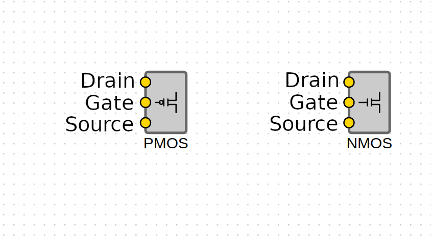

Components which will be used for this:PMOS, NMOS, Input, Output, Vdd, GND, Capacitor, Joint, OJoint.
Steps:
- Select NAND Gate from the option on the top of the page, under the heading.
- Connect two PMOS in parallel, in between Vdd and 3 input OR. To do so:
- Place two PMOS on the workspace.
- Connect drain of first PMOS to output of a Joint and connect that to drain of second PMOS.
- Connect Vdd to the input of the above mentioned Joint.
- Connect source of first PMOS to an OJoint and connect that to source of second PMOS.
- Connect the above OJoint to the first input of the OR gate.
-
Connect two NMOS in series, in between the 3 input OR and GND. To do so:
- Place two NMOS on the workspace.
- Connect the second input of the OR gate to an OJoint and connect that to the drain of the first NMOS.
- Connect the Source of first NMOS to an OJoint and connect that to Drain of Second NMOS.
- Connect the Drain of the Second NMOS to GND.
- Connect the GND to input of a capacitor and connect the output of that capacitor to the third input of the OR gate.
- Connect the output of the OR gate to an Out Component.
- Take one In component and connect it to gate of first PMOS and gate of first NMOS.
- Take another In component and connect it to gate of second PMOS and gate of second NMOS
- Click on Simulate and observe the graph on the right.
Components which will be used for this:PMOS, NMOS, Input, Output, Vdd, GND, Capacitor, Joint, OJoint.
Steps:
- Select NOR Gate from the option on the top of the page, under the heading.
-
Connect two PMOS in series, in between Vdd and 3 input OR. To do so:
- Place two PMOS on the workspace.
- Connect Vdd to the drain of the first PMOS.
- Connect the source of the first PMOS to an OJoint and connect that to the drain of the second PMOS.
- Connect the source of the second PMOS to another OJoint and connect that to the first input of the OR Gate.
-
Connect two NMOS in parallel, in between 3 input OR and GND. To do so:
- Place two NMOS on the workspace.
- Connect the drain of first NMOS to an OJoint and connect that to the drain of the second NMOS.
- Connect the second input of the OR gate to the above mentioned OJoint.
- Connect the source of the first NMOS to the output of a Joint and connect that to the source of the second NMOS.
- Connect the input of the above mentioned Joint to a GND.
- Connect the GND to input of a capacitor and connect the output of that capacitor to the third input of the OR gate.
- Connect the output of the OR gate to an Out Component.
- Take one In component and connect it to gate of first PMOS and gate of first NMOS.
- Take another In component and connect it to gate of second PMOS and gate of second NMOS
- Click on Simulate and observe the graph on the right.